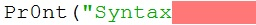

The Computer Science Survival Guide - Taming Python
Table of Contents
Computational Thinking
Computational thinking is the skill of converting a complex problem into many simple, solvable solutions.
- Thinking computationally is not programming!
- The answer a computer can provide is only as good as the question that is first asked of it.
Step1: Decomposition
- Firstly take the complex problem and break it down into finite states or actions.
- Then take each of these individual smaller problems and check that they can not be broken down further.
Figure 1: For example consider a vending machine (a complex problem)
Step2: Pattern Recognition
Once we have decomposed complex problems we often find find patterns among the smaller problems we create. The patterns are similarities or characteristics that some of the problems share.
We look for:
- Problems that repeat/loop
- Objects that have similar characteristics
Referring back to the vending machine example:
- inserting the money and displaying a balance would likely loop.
- items for sale in the vending machine would likely have a cost and description but others be treated similarly.
Finding these patterns allows us to better abstract like elements from the complex problem and solve it more efficiently.
Step3: Abstraction
For each individual problem note the important details outline the entities (nouns) and their actions (verbs), ignore information not absolutely essential to the problem.
The vending machine abstracted
- the user inserts <inputs> currency
- the user makes <inputs> a selection from a menu or a refund
- the machine [processes] if the user can afford the selected item
- the machine calculates [processes] the change
- the machine <outputs> the paid item and change
Step4: Algorithms
An algorithm is a simple set of steps to solve a problem.
- Algorithims are the final result of computational thinking.
- For each of the individual problems provide simple step by step solutions.
Almost all problems simplify into three stages:
- Input : enter values/entities (nouns)
- Process : do a calculation or decision (verbs)
- Output : print answer to the screen/file (nouns)
Figure 2: Algorithms are written as pseudocode and flowcharts.
Flowchart Shapes

Figure 3: Flowchart Shapes.
What is Programming/Coding
- Programming or coding is the process of entering the steps of an algorithim (instructions) into a computer.
- To run an algorithim on a computer it needs to be coded into very explicit binary instructions like 11100110.
- Fortunately we no longer program computers directly in binary but use a simpler (higher) programming language like python.
Python
- Python is a high level English like programming language
- look at the following python example :
print("hello world")
- When the Python code above is run/executed it is interpreted one line at a time into bytecode instructions that the computer can understand.
Syntax
Computer Languages such as Python have rules just like human Languages. For example in English a sentence starts with a capital letter and ends in a full stop.
Syntax: The rules of a language
Breaking the rules of any language for example incorrect spelling, punctuation or grammar renders it incomprehensible.
- Python is no exception and will fail to interpret/understand the code you have entered.
- When python is unable to understand your code it will do its best to highlight the Syntax Errors.
Comments
Comments are notes added to code to remind programmers what a piece of code does. In python a hash character # will begin a comment that extends to the end of the line.
# this is a comment ignored by the interpreter print("this is code") # this is also a comment
Comments are notes for humans ignored by the interpreter
Comments: Always begin with a #
Variables
Variables are a way of labelling data that is going to be used in a our code.
name = "Mr Kelly"
A variable is a named value that can be changed
- Variable names should always relate to the data they hold
- Variable names can’t start with a number or contain spaces (use under_scores or CamelCase instead).
Variables = are always set after they are named
Operators
Operators are symbols that change the value of a variable :
| Symbol | Operation |
|---|---|
| = | Assign the variable on the left the value of the right |
| + | add |
| - | subtract |
| * | multiply |
| / | divide |
| // | integer division |
| % | Modulus |
# This code sets the variable answer to the value of variable1 plus 2 answer = variable1 + 2
Data Types
A data type describes how data within a variable is stored.
- A python variable can store the following types :
| Type | Definition | Literal |
|---|---|---|
| integer | Whole Number | 1 |
| float | Decimal Number | 1.0 |
| boolean | A value that can only be TRUE or FALSE | True or False |
| string | Strings are variables that hold "Text" | "Text" |
"String": Literals are always inside "quotes" to tell the computer that this is "TEXT" not code like print()
Type Conversion/Casting
When using operators we frequently need to cast variables into compatible types.
# This code has a Type Error # python can't add strings(text) and intergers(numbers) together. print( 99 + " Years old" ) answer = input("Please enter a number : " ) + 1
| Function | Conversion | Output |
|---|---|---|
| float(“99”) | string -> float | 99.0 |
| int(“99”) | string -> integer | 99 |
| str(99) | number -> string | “99” |
# However Python can add strings(text) with strings(text) print( str(99) + " Years old" ) # Python can also add intergers(numbers) with intergers(numbers) answer = int( input( "Please enter a number : " ) ) + 1
Functions
Figure 4: Function
Functions are a way of reusing sets of instructions that perform the same task.
- For example two common functions used in python are print and input:
name = input("Please enter your name : ") print("hello ", name)
- input( "Question ?" )
- Takes a string to display
- captures the users keystrokes until the enter key is pressed
- then returns what the user has typed
- print( "OUTPUT" )
- takes a "string" and displays it on the screen
Functions are named commands() that may take inputs and/or return an output
Note Functions always have brackets() after their names
Defining New Functions
You can also define your own functions using the syntax below:
def function_name(input_variable1,input_variable2): """ Comment describing what the function does """ CODEBLOCK CODEBLOCK CODEBLOCK return output_variable
Whenever you reuse your code it should be in a function…
note the use of : to start an indented codeblock
Codeblocks / Indentation
The purpose of a code block is to define statements that will be executed together. Codeblocks are needed when code forks, loops or is otherwise referenced or reused.
In many high level languages instructions can be grouped together into blocks using curly brackets {…}.
int add(int x, int y) { // start a block return x + y; } // end a block
Python separates code-blocks purely on indentation alone as follows :
def add(x,y): """ As the following lines are indented they belong to the add function """ Ans = x + y return Ans
Syntax Reference Table
| Syntax Table | |
|---|---|
| # Comment | Text for humans ignored by the computer |
| Variable = | A named value that can be changed |
| “String” | A variable that holds "Text" |
| Function( inputs ) | A named command() that may take inputs and/or return an output |
| Operators | + plus - minus * times / divide = assign |
Logic
Logic statements allow the programmer to control the flow of a program to repeat or execute codeblocks selectively.
Comparison Operators
Frequently an algorithm needs to compare values (variables) in order make a decision.
Note the result of a comparison operation is always a boolean ( True or False ).
Python has the following operators to compare variables :
| Symbol | Operation |
|---|---|
| == | Is equal too |
| != | Is not equal too |
| < | Less than |
| <= | Less than or equal too |
| > | Greater than |
| >= | Greater than or equal too |
Note the double == means test if the left is equal to the right.
Be careful with the use of > GREATER THAN and < LESS THAN it is very easy to mix them up.
print(1==1) print(1!=2) print(1<2) print(1>2)
Boolean Operators
For many algorithms logic conditions/statements need to be combined.
Python provides the following boolean operators:
| Symbol | Operation |
|---|---|
| and | TRUE and FALSE = FALSE |
| or | TRUE or FALSE = TRUE |
| not | Inverts Statement Logic |
print(True and True) print(True and True and False) print(True or False or False) print(not True)
- A single False in a boolean AND statement equates to False.
- A single True in a boolean OR statement equates to True.
IF Statement
IF : Selectively run a codeblock only if a condition is meet (True).
Figure 5: if, else if (elif) and else
For example :
score = 42 if score > 80: print("Excellent") elif score >= 50 print("Well Done") else: print("Please Try Again")
Loops
Loops allow us to repeat code according to a condition. Ie:
Figure 6: Loops
- Open umbrella while it is raining
- For each student in classroom give candy
- Repeat this instruction 10 times
- While Loop
While: A statement that repeats a codeblock while the condition is True.
weather = "Raining" while weather == "Raining": print("It is raining, umbrella open") print("It is no longer raining close umbrella")
note the above will create an infinite loop as weather always == "Raining"
- For Loop
For : A statement that repeats a codeblock a known number of times.
# The range statement controls the for loops begining termination and step # the for loop below begins at 1 terminates at 11 and steps by 1 each loop for i in range(1,11,1): print(i)
For loops do not execute their terminal iteration; That is the loop above will print 1..10 not 11
- Recursive Functions
Another easy way to loop based on the outcome of a previous calculation/input is to recursively call a function.
For example validating user input by asking them to repeat an input that couldn't be understood :
def input_int_min_max(prompt,MIN, MAX): """ Simplified Validation Function to ensure the user enters an integer between min and max""" if(num >= MIN and num <= MAX): return num else: print("INVAILD") return input_int_min_max(prompt,MIN, MAX)
Recursive Function : A function that calls itself directly or indirectly forming a loop
Nested Logic
For complex problems it is also possible to nest logic statements within each other.
if weather == "Wet": if weather == "Windy": # wet and windy print("Take Raincoat") else: # just wet print("Take Umbrella")
Avoid nesting your code if possible as it makes code more difficult to read and debug, common solutions include:
simplifying boolean statements, for example :
use functions for duplicate fork code :
Data Structures
Data structures are a way to organise related data together with methods to access and manipulate them efficiently.
Often a program needs to work with many similar variables such as items, names, groups etc. Consider for example a simple program that averages the scores for 30 students:
student_score1 = 10 student_score2 = 20 student_score3 = 30 ... total = student_score1 + student_score2 + ... average = total / 30
Although the above would solve the average, it has limitations:
- The code above will only work for exactly 30 students.
- Coding without data containers would be more time consuming rewriting very similar instructions.
- The programmer is very likely to make mistakes.
Sequence Data Structures
Python sequences (strings, lists tuples) are ordered data structures that allow a single identifier to index more than one value.
Figure 7: Sequence of length 4
- Python Strings
A string is specialized data structure to hold a sequence of characters. A character is simply a symbol such as the letters of the English language (Python, string is a sequence of Unicode encoded characters) .
Note unlike other languages python :
- doesen't have a char type, just a string of a single char
- strings are immutable, can not be edited
Updating Strings You can "update" an existing string by (re)assigning a variable to another string.
- Python Lists and Tuples
Unlike strings that contain only characters, list and tuples can contain any type of objects
The previous averaging problem can be solved using a list data structure:
# sum : total the values of each item in the list # len : count the number of values held in the list listValues = [10,20,30,40] average = sum(listValues) / len(listValues)
- This solution will work for any number of students and is much easier and less error prone for the programmer.
- Note unlike other language python uses link lists for its data structures (most languages use congruent and adjacent arrays).
- As Python is dynamicly typed Language items in a list need not be of the same type.
List deletion
File I/O
binary and text …
Read
Write
Append
Parsing
SQL
Server Query Language … really is a book worthy topic CRUD
Handling Errors
Murphy's law Anything that can go wrong will go wrong
Syntax Errors
Syntax errors are the result of breaking the rules of the python language such as spelling, punctuation etc.
- When python is unable to understand your code it will do its best to highlight the syntax error.

- The example python code above contains multiple errors.
- print is misspelt Pr0nt (note python is case sensitive)
- the string "Syntax is missing a double quote
- the print function is missing a closing bracket
Syntax Error : The code cannot be interpreted as it violates the rules of the language
Logic Error
Logic Error : The code runs but produces the incorrect output for some or all input(s)
- Infinite Loops
Infinite loops are a type of logic error where by a program loops through a codeblock endlessly. There are three common causes of infinite loops:
- resetting the conditional variable incorrectly
num = 1 while num > 0: num = 10 # This will loop forever as num is reset within the loop.
- incorrect comparison operator
num = 0 while num < 0: num = num - 1 # This will loop forever as num will always be Less than zero. # the programmer either intended to use > Greater than or for num to increment
- unbreakable condition
while True: # This will always loop as the condition is True. # This loop can only be broken with the use of a Break statement
alternatively in the case of recursive functions
def recursive_fun(): return recursive_fun() # This function calls itself directly without a breakable condition # Be careful this can also happen indirectly with many functions calling each other.
Run Time Error
Run Time Error : The code fails during execution
Using an undeclared variable or indexing out of range
- exception handling
When an error occurs in python it terminates the current instruction and raises an exception. If the exception isn't handled by the program it is terminated and an error message is output to the shell.
Therefore if you have some code that may raise an exception (opening files/networks, user input) you should place the code in a try except block.
try: doSomething() # that may crash except: # doSomething() has caused a crash so do_something_else() else: # doSomething() is good so save()
The codeblock between the try and except is first executed. If no exception occurs, the except clause is skipped and the optional else codeblock is executed.
Input Validation
It is sound programming practice to protect your program from invalid and malicious input.
Accepting invalid input is a cause of run time errors and is also a security concern.
Data type validation :
def input_int(): try: number = int(input("INPUT NUMBER \n : ")) except: print("Input Invalid Please enter a whole number in the format 10") input_int() else: return number
Range validation
def int_min_max(num, MIN, MAX): if(num >= MIN and num <= MAX): return num else: return None
Constraint validation
def yes_or_no(): user_choice = "" while user_choice not in ["yes","no"]: user_choice = input("yes or no").lower() return user_choice
Debugging
Debugging: The process of identify and correcting the cause of an error
Although the python interpreter does its best to inform the user as to cause of a crash (such as dividing by zero) in complex programs it is often unclear what the cause of the error was (ie why and where did the program divide by zero).
However depending on your IDE (integrated development environment) a python programmer has many tools at their disposal for example idle has its own debugger. http://winpdb.org/
This guide will detail the use of Pythons debugger module, pdb.
- Tracing
Tracing is a debugging technique where by a programmer follows the execution of their code line by line. As this can be a tedious process in larger programs, programmers often start a trace at a point of interest in their code rather the beginning.
A debugging tool makes this easy to do, by allowing you to execute your program line by line, querying the values of variables along the way.
# Firslty import the pdb module at the top of your python file import pdb # ... clean code that we know works ... # Next to begin a trace, insert the following code above the line of interest: pdb.set_trace()
Python will execute the program as normal until it encounters pdb.set_trace(). Python will then pause execution, display the next line that will be executed and wait for your command.
Pdb offers the following commands to inspect the current state of the paused program :
Command Operation n Execute the next statement p var Print the current value of var l where am I (list current statements) c stop debugging run normally until next pdb.set_trace() r stop debugging run normally untilnext return q quit
Maintainability / Robustness
The following are considered good programming practice and are essential in ensuring that every program is robust and maintainable:
- Coding style and naming convention
- To the greatest extent possible write code that is Pythonic and literal.
- Module,Classes,Functions and Variables all need consistent meaningful names.
- (KEEP IT SIMPLE STUPID) good python code reads almost like English.
- Comments
- Concise meaningful comments are best, little and often
- Functions
- If you ever copy and paste code ask yourself should this be a function or a class?
- have I simplified/modelled the problem properly ?
- Modules
- Don't write absolutely everything into one huge python file, use separate modules for larger projects and reusable components.